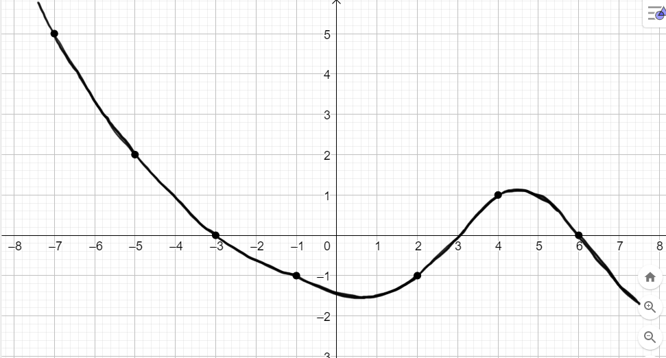

Compiti per casa
Argomenti svolti
1) Seno, coseno, tangente: definizione geometrica
[Par. 12.2, 12.3, pag. da 668 a 676]
2) Gradi v.s. Radianti
[Par. 2.1, pag. da 664 a 666]
2.1) Definizioni di grado e radiante
2.2) Un angolo di riferimento: l'angolo giro
2.3) Passare da gradi a radianti (e viceversa)
3) Visualizzazione delle funzioni trigonometriche
[Par. 12.2, pag. da 668 a 669]
3.1) Visualizzazione del seno
3.2) Visualizzazione del coseno
3.3) Visualizzazione del tangente
4) Archi associati
[Par. 12.6, 12.7, pag. da 680 a 683]
Esercizio 1
Considerate il grafico della funzione \(f\) rappresentato nella seguente figura

-
Che output assume la funzione in corrispondenza degli input \(x = -7\), \(x = -5\), \(x = 4\)?
-
Per quali valori della \(x\) la funzione assume output \(-1\,\)?
-
Per quali valori della \(x\) la funzione assume output \(0\,\)?
-
Per quali valori della \(x\) la funzione \(f\) assume output positivi?
Per quali assume output negativi?
Esercizio 2
Disegnare il grafico di una qualsiasi funzione che abbia le seguenti proprietà:
-
Assuma output positivi per valori della \(x\) minori di \(-3\) e maggiori di \(4\)
-
Assuma output negativi per valori della \(x\) compresi tra \(-3\) e \(4\)
-
Assuma output \(0\) per in corrispondenza degli input \(x = -3\) e \(x = 4\)
-
Assuma output \(4\) in corrispondenza dell'input \(x = -5\)
-
Assuma output \(-\) in corrispondenza dell'input \(x = 0\)
Esercizio 3
Rappresentare il grafico della seguente funzione:
\[
f\left(x\right) = sin\left(x\right) + 2
\]
Esercizio 4
Rappresentare il grafico della seguente funzione:
\[
f\left(x\right) = \color{red}{-}\color{black}{}cos\left(x\right)
\]
Suggerimento:
Che valori output assume la funzione \(f\) per gli angoli cardinali
\[
0 \,\,,\quad \dfrac{\pi}{2} \,\,, \quad \pi \,\,, \quad \dfrac{3}{2}\pi \,\,\,?
\]
Come cambia la situazione rispetto alla funzione coseno?